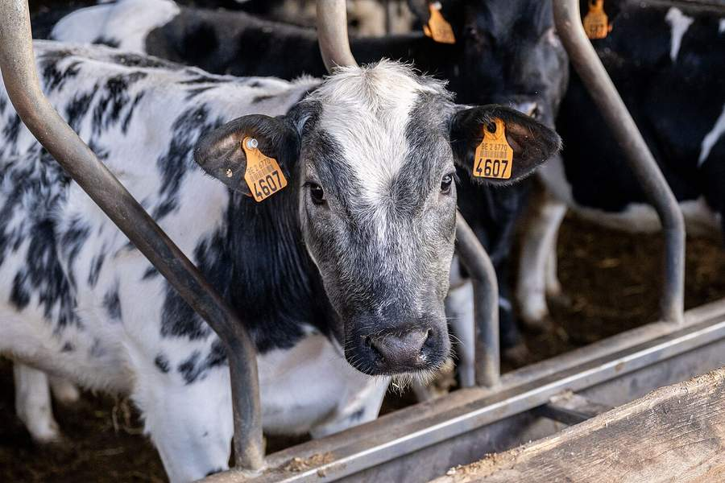
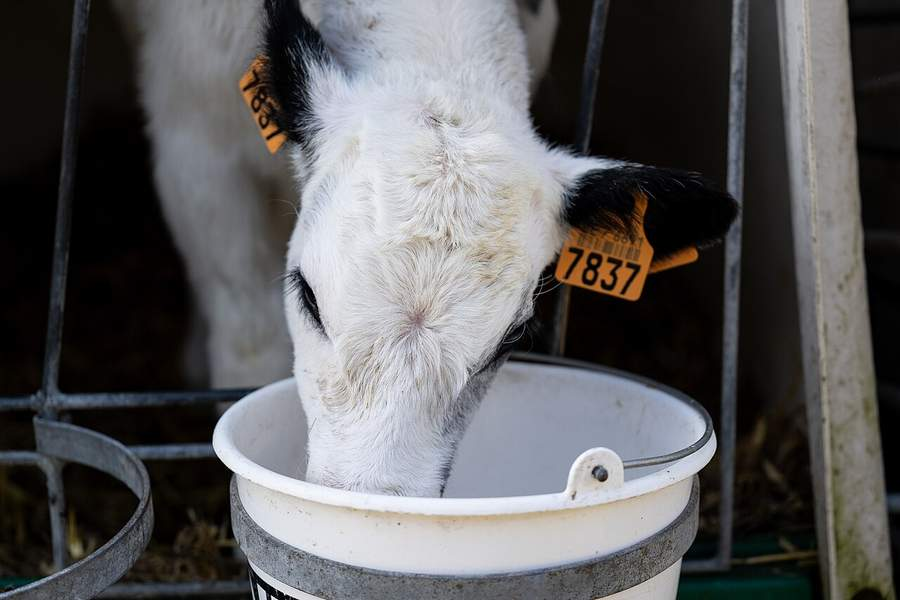

Introduction
The Belgian Blue carries a natural gene that switches off muscle control — its muscles grow double, the most extreme build known.
No breed yields more lean meat per animal. The trade-off: big calves often need caesarean delivery and skilled management.
Belgian Blue at a Glance
| Origin | Belgium (Wallonia) |
|---|---|
| Type | Beef breed |
| Dressing percentage | 65–71% — the highest of any breed |
| Build | Double muscling (myostatin gene) |
| Coat | White, blue roan or black |
| Price (indicative) | US $1,800–3,500 per breeding animal |
Varieties & Types of Belgian Blue
One muscular breed in three recognised colours:
- White — A white cow showing the breed’s bulging double muscling in full profile.
- Blue Roan — The blue-grey roan coat — a mix of black and white hairs — gave the breed its name.
- Black — Bulls are mountainous; black and speckled forms are also recognised.
Characteristics

- Double Muscling — Rounded, bulging muscles — the myostatin gene at work.
- Fine Bones — Fine bones and thin skin stretched over huge muscles.
- Huge Hindquarter — The hindquarter carries the most valuable meat.
- Small Fine Head — A small, fine head on a truly massive body.
Strengths
- Highest meat yield of any breed
- Very lean beef
- Fine bones, little waste
- Quiet temperament
- Top crossing sire for yield
Keep in Mind
Skilled calving care is essential: purebred calves are big and many are delivered by caesarean. Factor management and calving costs into any plan.
Beef Production
The Belgian Blue records the highest dressing percentage of any breed: 65–71%. A 650 kg animal gives roughly 420–460 kg of carcass — very lean beef with little waste.
As a crossing sire it adds muscle and yield to dairy-cross and beef calves.
Price & Buying Tips
Typical price — international (indicative): US $1,800 – 3,500 — per breeding animal; pedigree bulls cost more. All prices are indicative and move with the market.
Prices vary by country, pedigree and meat-market demand. Yield genetics are in demand and cross calves sell fast — but management skill matters.
Before You Buy — Checklist
- Body frame & muscling
- Legs & hooves sound
- Breeding organs normal
- Teeth & age checked
- Body condition score 3+
- Vaccination & deworming record
- Temperament calm
- Weight on scale, not by eye
Photos of the Breed

Frequently Asked Questions
What is double muscling?
A natural myostatin-gene variation switches off the normal limit on muscle growth, so Belgian Blue muscles grow roughly double — giving the highest meat yield of any breed.
How much meat does a Belgian Blue give?
It dresses out at 65–71% — the highest recorded. A 650 kg animal yields about 420–460 kg of very lean carcass.
Do Belgian Blue cows need caesareans?
Often, yes for purebred matings — calves are big and heavily muscled. Skilled calving management is essential with this breed.
What is the price of a Belgian Blue animal?
About US $1,800–3,500 per breeding animal (indicative); pedigree bulls cost more.
Free Guide & Related Breeds
All 25 breeds — with bull, cow and calf photos, varieties, production charts and Urdu summaries — are in our free 196-page pictorial guide:
📖 Download the Free Cattle Breeds Guide (PDF)
Related breeds: Charolais · Limousin · Aberdeen Angus
⚠️ Important: Breed figures on this page are typical published ranges, and prices are indicative only — they change with the market, the animal's age, records and pregnancy status. Always inspect an animal in person (or with your veterinarian) before buying.
✍️ Written by Dr. Shahid Bilal Depal, DVM (PVMC RVMP #15068)
This guide is for educational purposes. Consult a registered veterinarian for diagnosis and treatment.